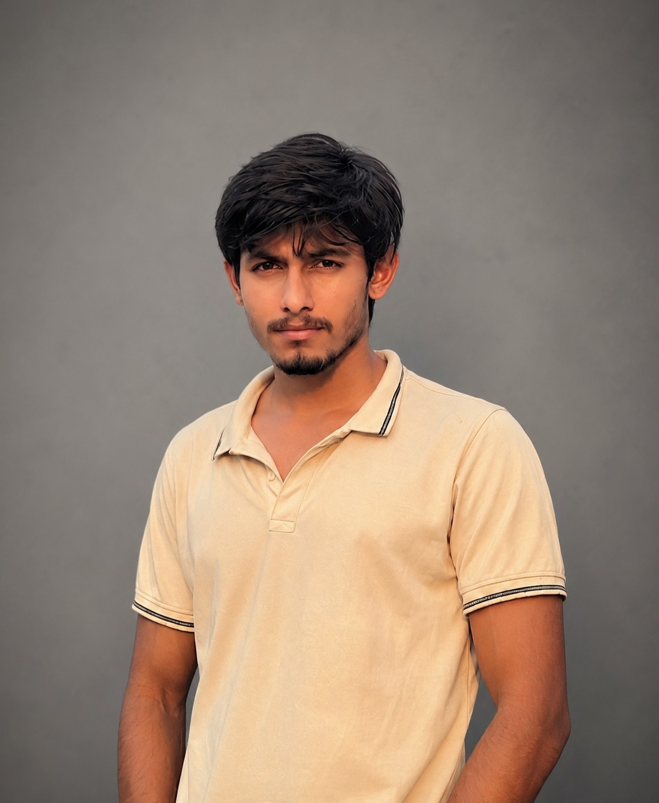
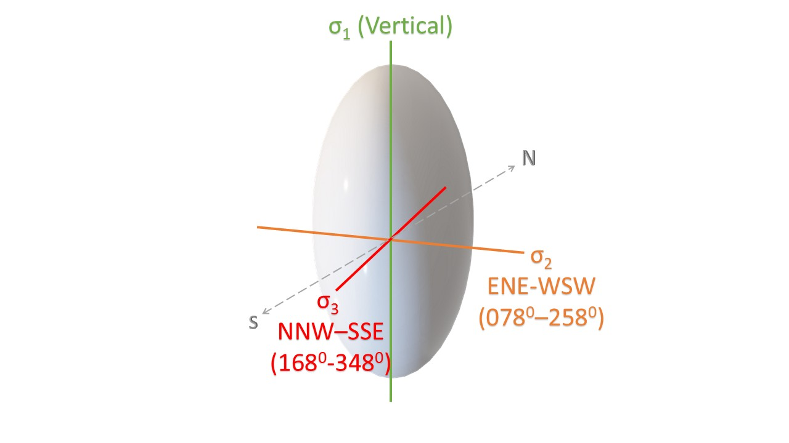
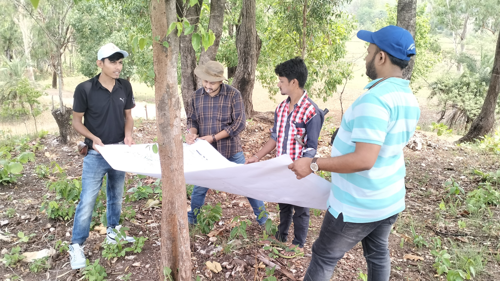
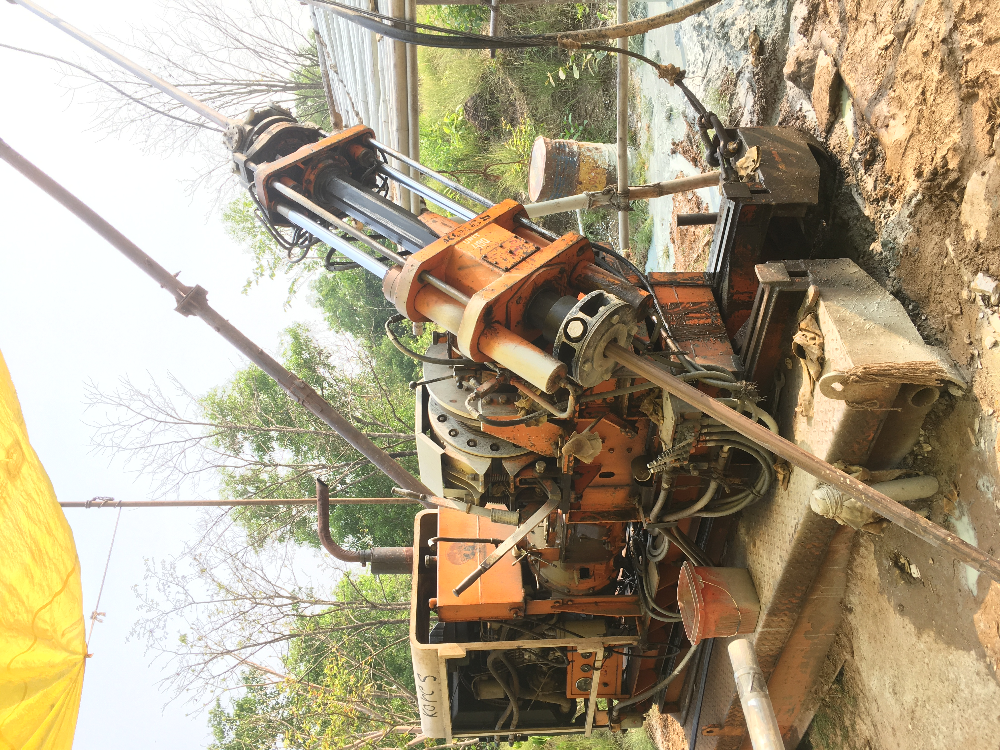
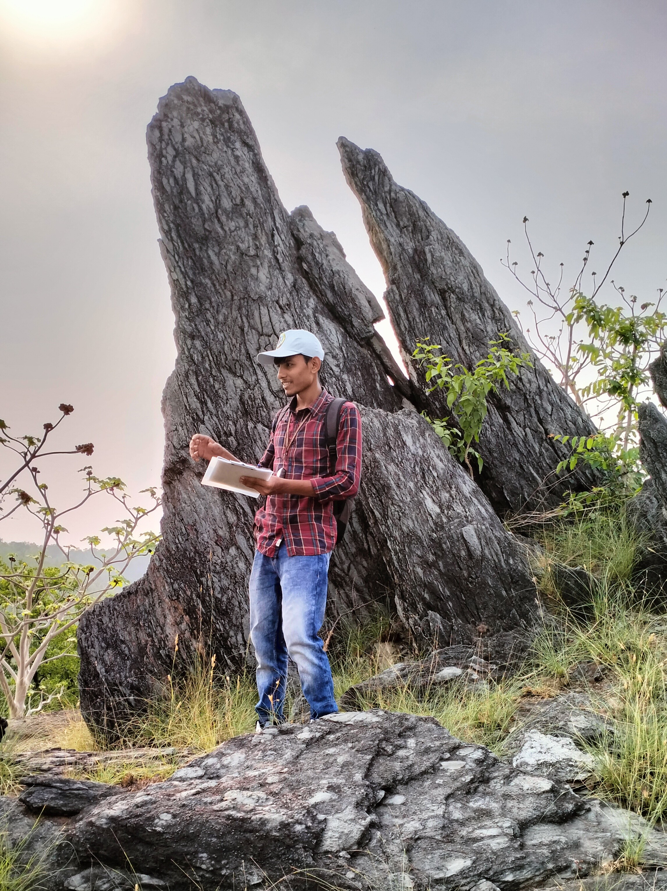
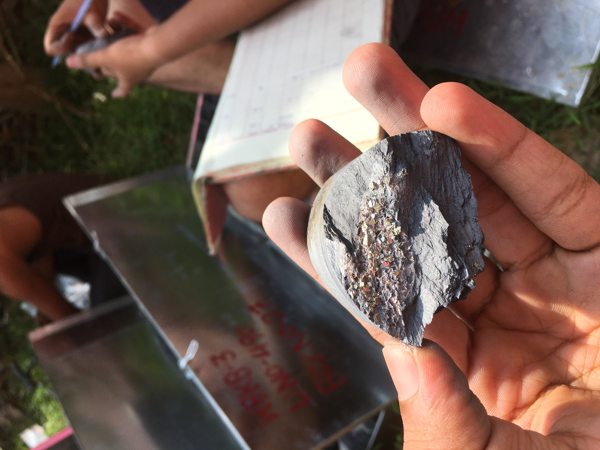
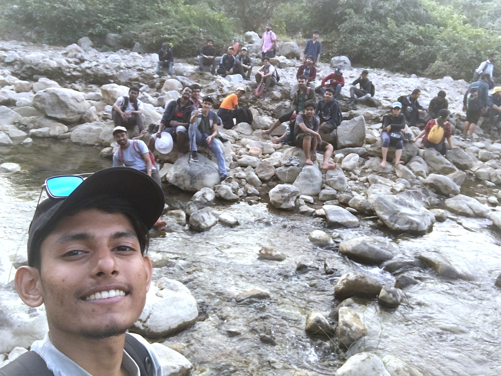
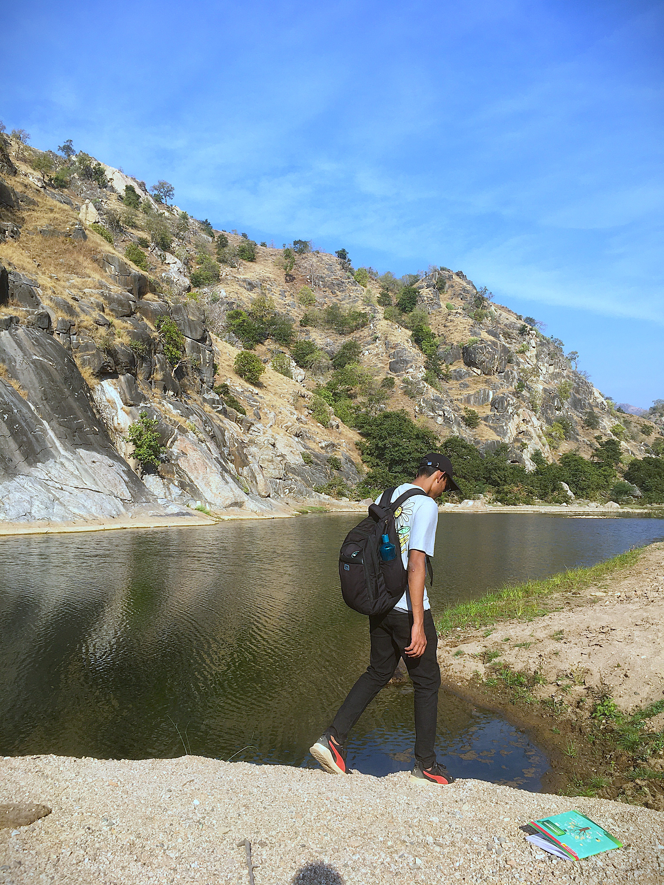

Department of Earth Sciences · IIT Bombay
Shubhra Ranjan Dutta
M.Sc., Applied Geology — Structural Geology & Geo-mechanics
I study how rocks record stress — reconstructing the deformation history of dikes and shear zones from field data, remote sensing, and geochemical analysis, and teaching the same fundamentals to the next set of GATE, JAM and NET aspirants.
Qualifications
0.0 m — 4.2 mMaster of Science in Applied Geology
Relevant courses: Nuclear Geology and Geochemical Prospecting, Isotope Geology, Mineralogy & X-Ray Crystallography, Geochemistry & Thermodynamics, Structural Geology.
Bachelor of Science in Geology
Core geology coursework alongside Physics and Chemistry.
Fellowships & Achievements
4.2 m — 9.6 mJunior Research Fellowship
Ministry of Earth Sciences (MoES), Government of India — awarded on CSIR-NET Earth Sciences performance, Dec 2025.
GATE 2026
Geology & Geophysics, score 626 — demonstrating strong proficiency in core geoscience concepts.
IIT-JAM 2022
Top position in the Joint Admission Test for M.Sc. in Geology.
Merit-Cum-Means Scholarship
Recipient at IIT Bombay.
First-Class with Distinction
Awarded by Utkal University on completion of the Bachelor's degree in Geology Honours.
Work Experience
9.6 m — 14.8 mFaculty / Instructor
- Teaching conceptual and theoretical geology for GATE, JAM and NET aspirants.
- Conducting problem-solving and concept-building sessions across mineralogy, petrology, geochemistry, structural geology, engineering geology and geomorphology.
- Mentoring students preparing for competitive examinations.
Research Experience
14.8 m — 22.3 mDissertation — M.Sc., Department of Earth Sciences
This study contributes to understanding the tectonic history and deformation mechanisms specific to the area, reconstructing prior stress states and interpreting the associated movement and deformation processes. It involved stress inversion, structural interpretation, and integration of field and remote-sensing datasets, with relevance to crustal deformation studies on planetary bodies.


Internship Trainee
- Fundamentals of geological mapping and drilling.
- Utilised ArcGIS and ERDAS for remote sensing data analysis.

Belpahari Hills, Jhargram District, West Bengal
Forested southwest of Jhargram district, near the Odisha and Jharkhand borders, within the broader Chhotanagpur–Singhbhum crystalline belt of the Eastern Indian Shield. Identified pyrite crystals — evidence of sulphide mineralisation in the local basement rocks.



Field Assistant
- Mapped and identified lithocontacts and fold structures in the Aravali Belt, using toposheets for precise location mapping.



Skills
22.3 m — 27.5 mTeaching & Mentoring
- Tutor at Geo Destination since 2025
- Guiding students in projects and career planning
Analytical & Laboratory
- UV–VIS Spectrophotometer, ICP–OES, XRF, EPMA, SEM–EDS
- Mass spectrometry — Inductively Coupled Plasma (ICP–MS)
- X-Ray Diffraction (XRD), Laser Raman Spectroscopy (LRS)
Computational & Programming
- Python for geochemical modelling and data handling
- Fortran (basic)
- ERDAS, ArcGIS
- MATLAB
Research Techniques
- Analytical data interpretation
- Geochemical modelling
- Geological mapping and core logging
Communication
- Simplifying complex theories for public audiences
- Delivering presentations and engaging larger audiences
Extracurricular Achievements
27.5 m — 31.0 mSports Secretary, Hostel 4 — IIT Bombay 2022–2023
Led planning and execution of inter-hostel sports and cultural events involving 100+ participants. Coordinated teams, managed logistics, and facilitated collaboration across student groups.
College Sports & Athletics Representation
Represented institute teams in cricket (captaincy role), athletics, badminton, and football, with podium finishes in institute-level competitions.
Academic Outreach & Workshops
Organised and led workshops on "GIS Applications in Earth Sciences" at B. B. Autonomous College, Chandikhole, introducing undergraduates to geospatial tools in geological research.

References
31.0 mDr. Sudipta Dasgupta
Associate Professor, Department of Earth Sciences, IIT Bombay
sdasgupta@iitb.ac.in